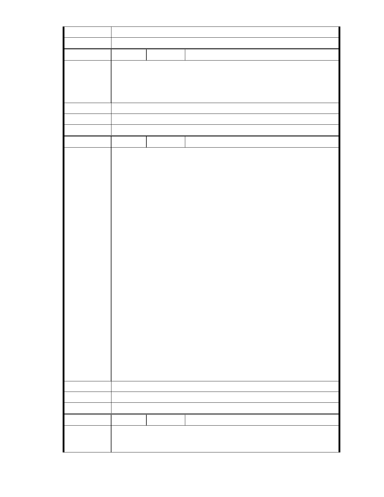

2.本案是否需進行環評應以主管機關認定為準。
委 員 會 決 議 同編號 1。
編 號 235 陳情人 官慮晴
內湖慈濟園區破壞了周邊湖光山色 阻礙了內湖區風光明媚的發展如果
陳 情 理 由 能重新整體規劃 是內湖區居民期盼的 請求市長 能多了解一下當地的
迫切性
建議辦法
市 府 說 明 相關陳情意見將納入本案審查人民意見，依法定程序辦理。
委 員 會 決 議 同編號 1。
編 號 236 陳情人 黃朝陽
支持慈濟內湖園區改善案及建言 慈濟無辜，所有一切都是合法合理的申
請。 但對方卻用不合法也不合理的方式集會抗議加抹黑支持慈濟內湖園
區改善案。 說明會 場場舉白布條並在門口大聲吶喊抗議。 會場中恣意
叫囂、不遵守會議規則發言不止、是為反對而反對。 他們住著保護區變
更的社區、大樓，卻要他人的土地不得變更 甚至回復 50 年前樣貌。 他
們知道淹水跟慈濟無關 卻要慈濟負責承諾未來不淹水。 所謂某聯盟一
直訴求此塊地原應有多少滞洪量 並要求慈濟全面開挖成滞洪池實在是
無理要求。 a. 大型滯洪池安全及控管問題繁瑣，慈濟無法以會眾小額所
匯聚之善款負擔。 b. 大型滯洪池真是需要，理應由政府另行設置 下游
居民才無安全顧慮。(內湖區張區長於 29 日說明會 證實大型滯洪池應由
陳 情 理 由 政府負責) 對滯洪問題就係爭北基地之右側有一約 4M 巷道 左側慈濟又
規劃預留 8M 道路，將來政府可徵收設置排水箱涵，慈濟根本就不該多
設滯洪池。 慈濟對國家榮譽及國際觀瞻有加分作用，內湖居民與有榮焉，
內湖居民需要慈濟。 慈濟對此塊地處置選項有三(個人分析) 處置方式
對居民利弊 (以秀湖里、大湖里及內湖普遍居民角度) a.保留現狀 持續依
目前狀況使用，多年問題無法解決。 b.賣出 正中反對者下懷，接手者會
大舉開發山坡地，大湖及秀湖等居民會怕過度開發，帶來好山好水遭破
壞及其他問題，影響房價及居住品質。c.可改善 提升大湖公園周邊景觀、
帶動慈濟人文、慈濟功能可以更完善，當地居民可以享受園區提供之公
共空間、參與慈濟人文提供之教育訓練、志工活動等，身為內湖居民樂
見其成。
建議辦法
市 府 說 明 相關陳情意見將納入本案審查人民意見，依法定程序辦理。
委 員 會 決 議 同編號 1。
編 號 237 陳情人 王土坤
陳 情 理 由 呈都發局長官: 在地近 40 年,在聽過慈濟三場改善說明會.心中有感.時代
演變看到內湖從一片稻田到現在高樓林立,而每個人朝夕忙於工作,心靈
- 282 -